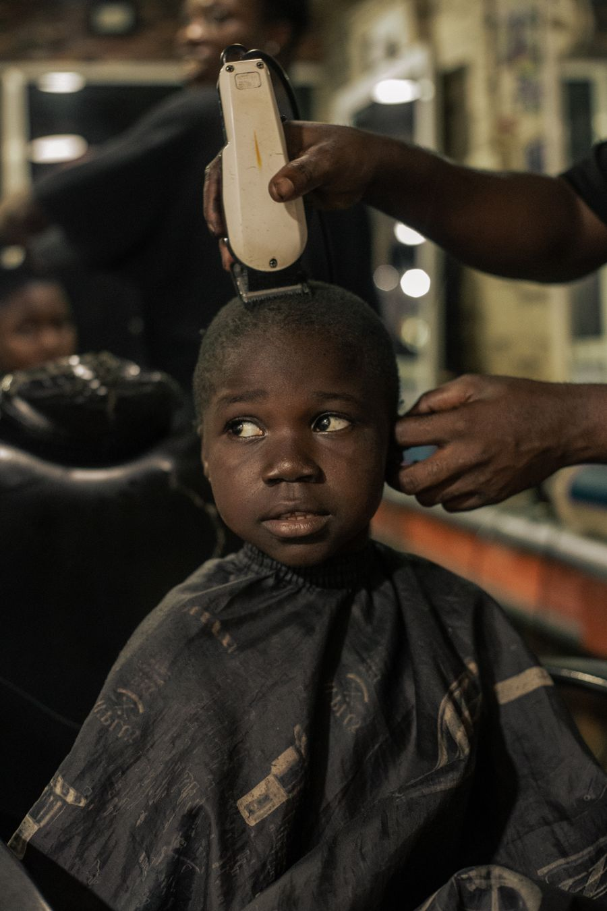
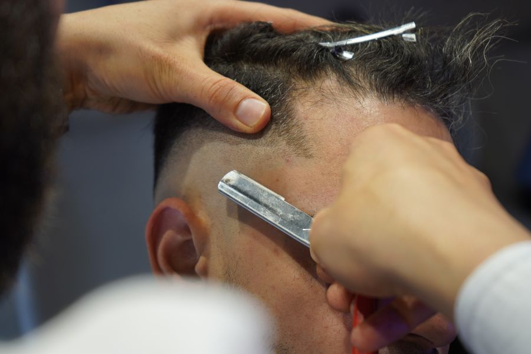
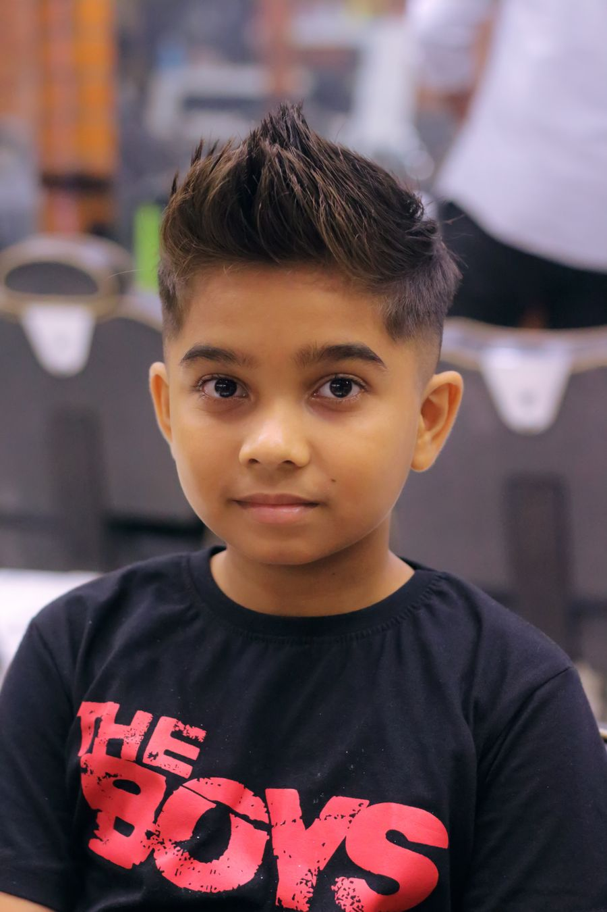
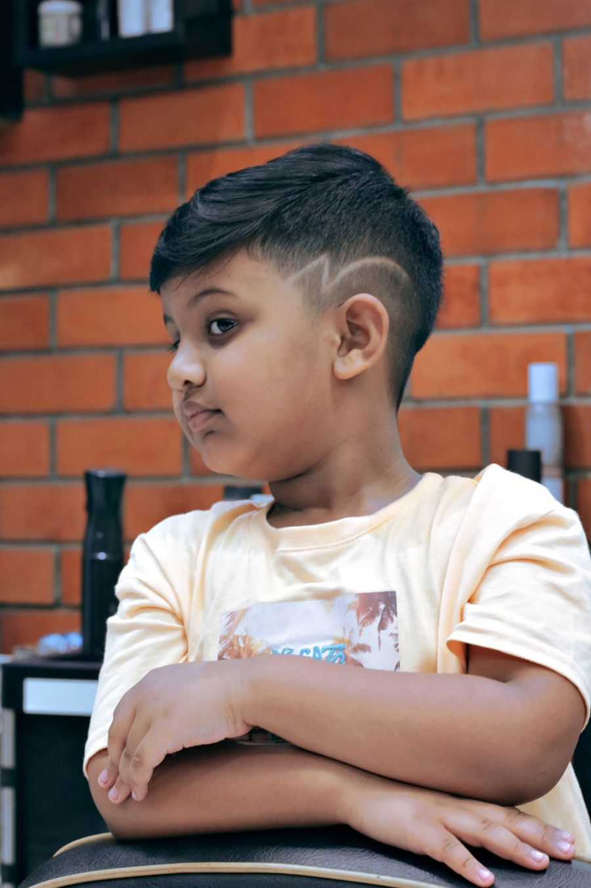
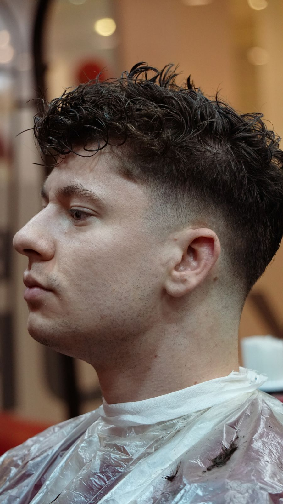

Bolalar · 0–12
Klassik bolalar kesi
50 000Yengil, gigienik va o'sishga qulay klassik kesim. Planshet bilan chalg'itamiz.
Tanlash ↗Bosh sahifa · Katalog
Turmakni tanlang — narxi ko'rsatilgan. "Tanlash" bosilganda yozilish formasi ochiladi va turmak avtomatik to'ldiriladi.
Yengil, gigienik va o'sishga qulay klassik kesim. Planshet bilan chalg'itamiz.
Tanlash ↗Yon tomonlari asta qisqaradigan zamonaviy kesim — bog'cha va maktab uchun mos.
Tanlash ↗
Skin yoki low fade — o'smirlar orasida eng ko'p so'raladigan turmak.
Tanlash ↗Maktab va rasmiy tadbirlar uchun taralgan, toza ko'rinishdagi an'anaviy kesim.
Tanlash ↗Yuvish, kesim va yakuniy turmak — har qanday yoshga mos an'anaviy uslub.
Tanlash ↗Yon uchak bilan ajratilgan toza taroq — maktab va tantanalar uchun ideal.
Tanlash ↗

Yon va orqa qisqa, yuqori qism uzun qoladi — jonli va yorqin ko'rinish.
Tanlash ↗
Issiq kunlar uchun qisqa va parvarishi oson kesim — bolaga qulay, onaga xotirjam.
Tanlash ↗Jingalak sochlar uchun hajm va shaklni saqlaydigan nozik kesim.
Tanlash ↗Yumshoq to'lqinli kesim — tabiiy hajm va chiroyli ko'rinish.
Tanlash ↗Bir tashrifda ikkalasi: otaga klassik, bolaga unga mos uslub.
Tanlash ↗
Yon tomoni tekis, tepasi hajmli — hozirgi trenddagi jonli uslub.
Tanlash ↗Aniq o'tishli yon fade — kuchli va zamonaviy o'smir obrazi.
Tanlash ↗